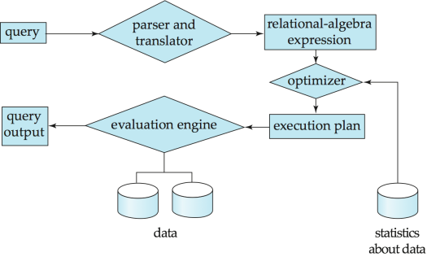
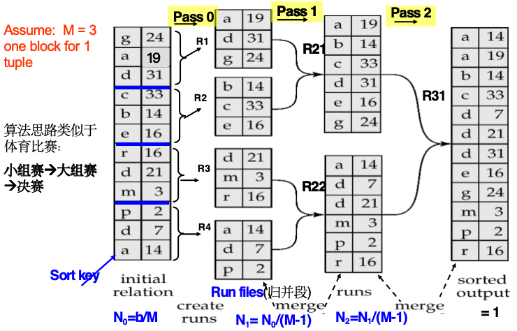

查询处理¶
Quote
- CPU 无法直接操作磁盘中的数据
- 磁盘数据读/写（传输）速度的增长率远低于磁盘容量的增长率
- 磁盘寻道速度的增长率远低于磁盘数据传输速度的增长率
基本步骤¶

- 语法分析与翻译：得到解析树和关系代数
- 语法分析器检查语法，验证关系
- 将查询翻译成其内部形式——扩展关系代数
- 优化
- 原因：
- 对于一个给定的 SQL 查询语句，可能存在很多等价的关系表达式
- 每个关系代数操作都可以使用几种不同的算法来执行
- 目标：从所有等价的执行计划中选择代价最低的一个，衡量代价时考虑两个因素：
- 执行所使用的算法
- 来自数据库目录的统计信息 e.g. 每个关系中的元组数量、元组的大小等
- 执行（evaluation）：查询执行引擎接收查询执行计划，执行该计划，并返回查询的答案
- 执行计划：规定了详细执行策略的带注释表达式
- 精确定义每个操作所使用的算法
- 以及操作执行如何进行协调
查询成本的度量¶
- 代价通常衡量为响应查询所需的总耗时（total elapsed time）
-
total elapsed time = disk access + CPU + network communication
-
disk access：主要代价，且相对容易估算
-
衡量考虑因素：
- 执行的寻道操作次数
- 读取的块数 \(\times\) 平均块读取代价
- 写入的块数 \(\times\) 平均块写入代价
Info
写入一个块的代价大于读取一个块的代价：数据在写入后会被读回，以确保写入成功
- 计算公式：为简单起见，仅使用从磁盘传输的块数和寻道次数作为代价衡量指标
- \(t_T\)：传输一个块的时间（\(\approx 0.1ms\)）
- \(t_S\)：一次寻道的时间（\(\approx 4ms\)）
- \(b\) 次块传输加上 \(S\) 次寻道的代价：\(b * t_T + S * t_S\)
Info
- 为简单起见，忽略了 CPU 代价（但实际系统中确实会将 CPU 代价考虑在内）
- 在代价公式中，不包括将最终结果写回磁盘的代价
代价影响因素：主存中缓冲区的大小
- 拥有更多内存可以减少对磁盘访问的需求
- 可用于缓冲的实际内存量取决于其他并发的 OS 进程，且在实际执行前难以确定
- 我们经常使用最坏情况估计，即假设只有该操作所需的最小内存量可用，同时也进行最好情况估计
- 所需数据可能已经驻留在缓冲区中，从而避免磁盘 I/O，但这在代价估算中很难考虑在内
SELECT¶
等值比较¶
file scan¶
文件扫描：搜索定位并检索满足选择条件的记录的算法，不使用索引
- 线性搜索：扫描每个文件块并测试所有记录是否满足选择条件
- 代价估计
- \(b_r\) 表示包含关系 \(r\) 中记录的块数
- 非键属性：代价 = \(b_r\) 次块传输 + 1 次寻道
- 键属性：代价 = \((b_r / 2)\) 次块传输 + 1 次寻道
- 由于使用的主键具有唯一性，可以在找到记录后停止）
- \((b_r / 2)\) 是平均代价估算
- 适用条件：无论选择条件、文件中的记录排序或索引可用性如何，都可以应用线性搜索
- 适用条件
- 针对排序属性的等值比较 e.g.
WHERE a = 5 - 关系的块在磁盘上是连续存储的
- 代价估计
-
键属性：代价 = \(\lceil \log_2(b_r) \rceil\) 次块传输 + \(\lceil \log_2(b_r) \rceil\) 次寻道
-
非键属性：需要加上包含满足选择条件的记录的块数
- 块传输 = \(\lceil \log_2(b_r) \rceil + \lceil sc(A, r) / f_r \rceil - 1\)
- 其中 \(sc(A, r)\) 是满足选择条件的记录数，\(f_r\) 是每个块的记录数
解释
- 如果选择属性不是码属性，意味着可能有多条满足条件的记录
- 由于文件是有序的，这些匹配记录必定在物理上连续存放
- 因此，在二分搜索定位到第一条记录后，还需要顺序读取后续包含匹配记录的块（不会有新的寻道次数）
index scan¶
- 索引扫描：使用索引的搜索算法
- 前提：选择条件必须基于该索引的搜索码
- A3: 键上的等值比较：检索满足相应等值条件的单条记录
- 代价 = \((h_i + 1) * (t_T + t_S)\)，其中 \(h_i\) 为索引树高（层数）
- 遍历索引树的每一层找到指向数据块的指针，读取数据块
- A4: 非键上的等值比较：检索满足相应等值条件的多条记录
- 记录将位于连续的块中（主索引存在于顺序文件中）
- 包含匹配记录的块数：\(b = \lceil sc(A, r) / f_r \rceil\)
- 代价 = \(h_i * (t_T + t_S) + t_S + t_T * b\) = \((h_i + b) * t_T + (h_i + 1) * t_S\)
- 搜索码是候选码：检索单条记录
- 代价 = \((h_i + 1) * (t_T + t_S)\)
- 搜索码不是候选码：检索多条记录
- 遍历索引树，找到对应的辅助索引
- 最坏情况下，存储桶中 \(n\) 条匹配记录中的每一条都可能位于不同的块中，都需要进行一次块传输和寻道
- 代价 = \((h_i + n) * (t_T + t_S)\)
- 代价可能非常高，可能比线性扫描更糟糕
非等值比较¶
- 比较符：\(>, >=, <, <=, <>\)，与等值比较的不同之处在于选择范围大
- 形式为 \(\sigma_{A \le V}(r)\) 或 \(\sigma_{A \ge V}(r)\) 的选择的实现方式：
- 线性文件扫描（A1）
- 二分搜索（A2）
-
使用索引（下述两种方法）
- 对于 \(\sigma_{A \ge V}(r)\)，使用索引找到第一条 \(A \ge V\) 的元组，并从此开始顺序扫描关系
- 对于 \(\sigma_{A \le V}(r)\)，只需顺序扫描关系直到遇到第一条 \(A > V\) 的元组（不使用索引）
- 对于 \(\sigma_{A \ge V}(r)\)，使用索引找到第一个 \(\ge V\) 的索引项，并顺序扫描索引以获取指向记录的指针
- 对于 \(\sigma_{A \le V}(r)\)，只需顺序扫描索引的叶节点页面以查找指向记录的指针，直到遇到第一个 \(> V\) 的项
- 在这两种情况下检索被指向的记录，每条记录都需要一次 I/O，线性文件扫描可能会更便宜
复杂选择¶
\(\sigma_{\theta1 \wedge \theta2 \wedge \dots \wedge \theta n}(r)\)
- A8: 使用单个索引
- 从 \(n\) 个条件 \(\theta_1 \dots \theta_n\) 中选择代价最小的 \(\theta_i\) 先执行
- 返回元组提取到内存缓冲区后，对元组测试其他条件
- A9: 使用复合索引：如果有合适的复合（多码）索引可用，则使用它
- A10: 通过标识符交集实现
- 前提：参与合取的条件都有带记录指针的索引
- 对每个条件使用相应的索引得到满足条件的指针，并取交集
- 再从文件中提取记录
- 如果某些条件没有索引，则先对有索引的条件取交集并提取记录到内存，再在内存中测试那些没有索引的条件
\(\sigma_{\theta1 \vee \theta2 \vee \dots \vee \theta n}(r)\)
A10: 通过标识符并集实现：
- 前提：所有条件都有可用索引（否则使用线性扫描）
- 对每个条件使用相应的索引，并取所有获得的记录指针集合的并集，再从文件中提取记录
\(\sigma_{\neg\theta}(r)\)
- 对文件使用线性扫描
- 如果满足 \(\neg\theta\) 的记录非常少，且索引适用于 \(\theta\)：使用索引找到满足条件的记录并从文件中提取
* Sorting [fold]¶
- 数据排序的两种情况：
- 输出请求
order by - 可以快速实现
join操作
Warning
我们可以在关系上建立索引，然后使用该索引按排序顺序读取关系。但这只是在逻辑上、而非物理上对关系进行了排序，并可能导致每个元组都要进行一次磁盘块访问。
- 做法
- 对于适合放入内存的关系：使用快速排序等技术
- 对于无法放入内存的关系：外部归并排序
外部归并排序¶
- M 表示内存大小（以页面为单位）
- 创建排序好的归并段 runs：令 i 初始为 0，重复执行以下操作直到关系结束（i 的最终值为 N）
- 将关系的 M 个块读入内存
- 对内存中的块进行排序
- 将排序后的数据写入归并段 \(R_i\)；将 i 加 1
- 归并
- 使用 \(N\) 个内存块来缓冲输入段
- 使用 1 个块来缓冲输出
- 将每个段的第一块读入其对应的缓冲页
- 重复：
- 在所有缓冲页中选择第一条记录并按排序顺序
- 将该记录写入输出缓冲区
- 如果输出缓冲区已满，则将其写入磁盘
- 从其输入缓冲页中删除该记录
- 如果该缓冲页变为空，则将该段的下一块（如果有）读入缓冲区
- 直到所有输入缓冲页均为空
- 需要进行多次归并阶段 passes
- 在每个阶段中，合并 \(M - 1\) 个连续的归并段组
- 一个阶段将归并段的数量减少到原来的 \(1/(M - 1)\)，并产生长度增加相同倍数的归并段
- 重复执行多个阶段，直到所有归并段都被合并为一个
Example

-
代价分析
- 块传输次数
- 构建阶段：\(2b_r\)（读入+输出）
- 归并阶段：
- merge passes：\(\lceil \log_{M-1}(b_r / M) \rceil\)
- 每一次 merge passes 块传输次数均为 \(2b_r\)（读入+输出）
- 注意：最后一个阶段不计算写入代价（无需写入磁盘）
- 总块传输次数：\(b_r ( 2 \lceil \log_{M-1}(b_r / M) \rceil + 1)\)
- 寻道次数：
- 构建阶段：\(2 \lceil b_r / M \rceil\)（读取和写入每个归并段都需要一次寻道）
- 归并阶段：
- 缓冲区大小：\(b_b\)（一次读/写 \(b_b\) 个块）
- 每个归并阶段需要 \(2 \lceil b_r / b_b \rceil\) 次寻道（最后一个阶段除外）
- 总寻道次数：\(2 \lceil b_r / M \rceil + \lceil b_r / b_b \rceil (2 \lceil \log_{M-1}(b_r / M) \rceil - 1)\)
- 块传输次数
JOIN¶
Nested-loop join¶
-
嵌套循环连接
- 外层循环：遍历外层关系 \(r\) 的每一条记录
- 内层循环：对于 \(r\) 的每一条记录，都扫描一遍内层关系 \(s\)，寻找满足连接条件的记录
-
优点：不需要索引，并且可以与任何类型的连接条件一起使用
- 缺点：代价高昂（需要检查两个关系中的每一对元组）
-
代价分析
- 最坏情况：内存仅够容纳每个关系的一个数据块
- \(n_r * b_s + b_r\) 次数据块传输
- \(n_r + b_r\) 次磁盘寻道
- 最好情况：两个关系都全部在内存中
- \(b_r + b_s\) 次数据块传输
- 2 次寻道
变量含义
\(n_r\)：外层关系 \(r\) 的行数
\(b_r\)：外层关系 \(r\) 的块数
\(n_s\)：内层关系 \(s\) 的行数
\(b_s\)：内层关系 \(s\) 的块数
- 最坏情况：内存仅够容纳每个关系的一个数据块
-
如果较小的关系可以完全装入内存，则将其作为内层关系，只需要读一次
Block nested-loop join¶
-
块嵌套循环连接：以数据块为单位处理（内层关系的数据块针对外层关系的每个数据块只读取一次）
-
代价分析
- 最坏情况：\(b_r * b_s + b_r\) 次数据块传输 + \(2 * b_r\) 次寻道
- 条件：内存中只有 3 个 block：\(Br, Bs, Bout\)
- 优化：让数据块数量较少的关系作为外层关系
- 最好情况：\(b_r + b_s\) 次数据块访问 + 2 次寻道
- 条件：s 全部且始终在内存中，只读一次
- 优化：让数据块数量较少的关系作为内层关系
- 最坏情况：\(b_r * b_s + b_r\) 次数据块传输 + \(2 * b_r\) 次寻道
- 优化
- 当 \(M > 3\)，但 \(M < b_s\) 且 \(M < b_r\) 时：（其中 \(M\) = 以块为单位的内存大小）
- 使用 \(M - 2\) 个磁盘块作为外层关系的块单位
- 使用剩余的两个块来缓冲内层关系和输出
- 代价：\(\lceil b_r / (M-2) \rceil * b_s + b_r\) 次数据块传输 + \(2 \lceil b_r / (M-2) \rceil\) 次寻道
- 如果等值连接属性构成了内层关系上的主键，则在第一次匹配成功后即可停止内层循环
- 交替向前和向后扫描内层循环，以充分利用残留在缓冲区中的数据块（使用 LRU 替换策略时，能直接复用上一轮残留在内存尾部的缓存块）
- 如果内层关系上有可用索引，则使用索引（索引嵌套循环连接）
- 当 \(M > 3\)，但 \(M < b_s\) 且 \(M < b_r\) 时：（其中 \(M\) = 以块为单位的内存大小）
Indexed nested-loop join¶
- 索引嵌套循环连接：对于外层关系 \(r\) 中的每一个元组 \(t_r\)，使用索引去查找内层关系 \(s\) 中满足与元组 \(t_r\) 连接条件的元组
- 使用条件：
- 连接是等值连接或自然连接
- 内层关系 \(s\) 有可用索引
-
最坏情况：
- 缓冲区只能够容纳关系 \(r\) 的一个页面（数据块），并且对于 \(r\) 中的每一个元组，都要对 \(s\) 执行一次索引查找
- 连接成本：\(b_r (t_T + t_S) + n_r * c\)
\(c\)
- 指对于外层关系 \(r\) 的一个元组，遍历索引并获取所有匹配的内层关系 \(s\) 中元组的成本
- \(c\) 可以估算为：使用该连接条件在关系 \(s\) 上执行单次选择（条件查询）的成本
-
如果在关系 \(r\) 和 \(s\) 的连接属性上都有可用索引，应选择元组数量较少的关系作为外层关系
Merge-join¶
Sort-merge join¶
- 排序归并连接：
- 将两个关系按照其连接属性进行排序
- 合并：
- 在内存中维护两个指针，分别指向关系 \(r\) 和 \(s\) 的当前元组
- 依次比对连接属性的值，若相等则输出
- 只能用于等值连接和自然连接
- 优点：每个数据块只需要被读取一次（假设连接属性上任意给定值的全部元组都能装入内存）
- 成本：\((b_r + b_s)\) 次数据块传输 + \((\lceil b_r / b_b \rceil + \lceil b_s / b_b \rceil)\) 次寻道（如果关系未排序，则还需加上排序的成本）
Hybrid merge-join¶
- 前提：如果一个关系已排序，而另一个关系在连接属性上具有辅助 \(B^+\) 树索引
- 步骤：
- 将已排序的关系与 \(B^+\) 树的叶节点条目进行合并
- 将结果按照未排序关系的元组地址进行排序
- 按照物理地址顺序扫描未排序的关系，并与之前的结果进行合并，用实际的元组替换地址
Hash-join¶

- 适用于等值连接和自然连接
-
步骤：
- 使用哈希函数 \(h\) 对两个关系的元组进行分区
- 对于每个 \(i\)：
- 将 \(s_i\) 加载到内存中，并使用连接属性在其上构建一个内存哈希索引
- 从磁盘中逐个读取 \(r_i\) 中的元组，利用内存哈希索引定位 \(s_i\) 中每个匹配的元组 \(t_s\)
Abstract
- \(r_i\) 中的 \(r\) 元组只需要与 \(s_i\) 中的 \(s\) 元组进行比较，不需要与任何其他分区中的 \(s\) 元组进行比较
- 关系 \(s\) 被称为构建输入（build input），而 \(r\) 被称为探测输入（probe input）
- 如果分区数 \(n\) 大于内存的页数 \(M\)，则需要进行递归分区
-
成本：
- 如果不需要递归分区：\(3(b_r + b_s) + 4 * n_h\) 次数据块传输 + \(2(\lceil b_r / b_b \rceil + \lceil b_s / b_b \rceil)\) 次寻道
- 如果需要递归分区：
- 对构建关系 \(s\) 进行分区所需的趟数：\(\lceil \log_{M-1}(b_s) - 1 \rceil\)（最好选择较小的关系作为构建关系）
- 总开销估计为：
- \(2(b_r + b_s)\lceil \log_{M-1}(b_s) - 1 \rceil + b_r + b_s\) 次数据块传输
- \(2(\lceil b_r / b_b \rceil + \lceil b_s / b_b \rceil) \lceil \log_{M-1}(b_s) - 1 \rceil\) 次寻道
- 如果整个构建输入可以全部保存在主内存中，则不需要进行分区：\(b_r + b_s\)（最佳情况）
Info
通常将 \(n_h\) 选择为 \(\lceil b_s / M \rceil * f\)，其中 \(f\) 是一个修正因子（fudge factor），通常在 1.2 左右
* 其他操作¶
- 去重可以通过 hash 或 sort 来实现
- 投影：对每个元组执行投影，随后进行去重
- 聚集可以通过类似于去重的方式来实现
...
Quote
其他具体内容请查看 PPT
* 表达式的评估¶
实例化¶
- Materialization：一次只执行一个操作，利用实例化到临时关系中的中间结果来执行下一层的操作
- （改进）双缓冲：为每个操作使用两个输出缓冲区
- 当一个缓冲区填满时将其写入磁盘，同时填充另一个缓冲区
- 允许磁盘写入与计算重叠（并行），从而减少执行时间
流水线¶
- 流水线：在某个操作正在执行时，就将元组传递给其父操作（同时执行多个操作，将一个操作的结果直接传递给下一个操作）
- 优点：比实例化要便宜得多：不需要将临时关系存储到磁盘中
- 缺点：可能并不总是可行（取决于下一个操作的类型，以及输出是否排序等）
- 通过两种方式执行：需求驱动（demand driven）和生产者驱动（producer driven）
- demand driven/lazy evaluation：
- 每个操作根据需要向其子操作请求下一个元组
- 每个操作都被实现为一个迭代器
- producer driven/eager evaluation：
- 在操作符之间维护缓冲区
- 操作符急切地产生元组并将其向上传递给它们的父操作
- demand driven/lazy evaluation：